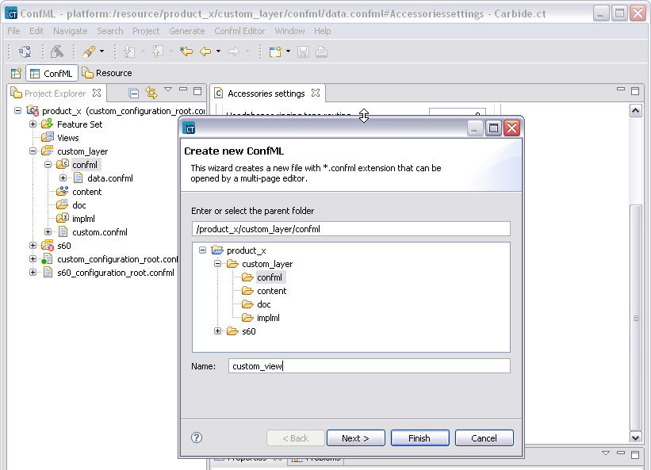
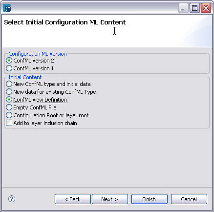
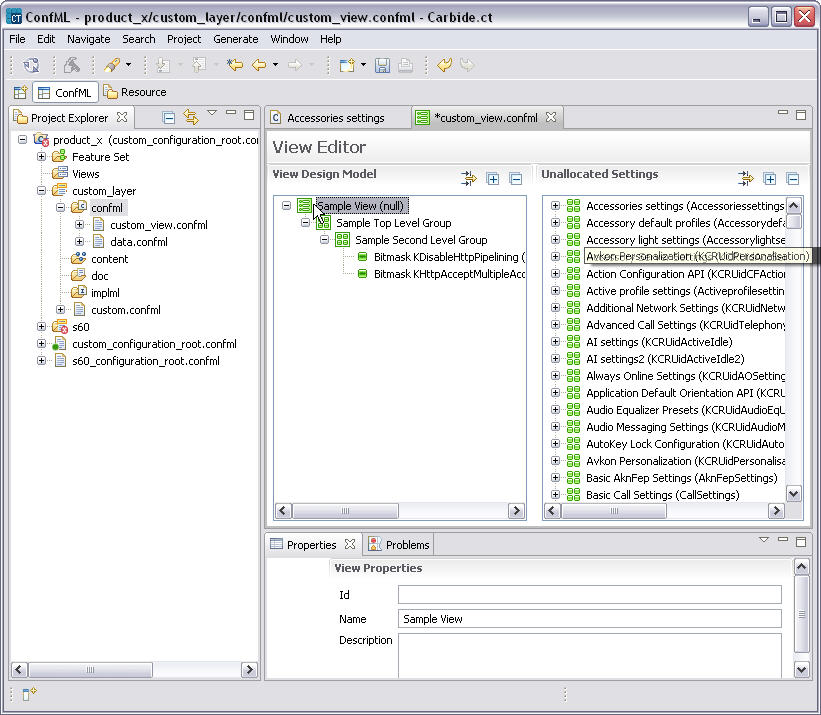

Creating a new View definition
A view is a structure of ConfML syntax which refers to selected features and settings in other ConfML files, grouping them in a logical way and managing their visibility.
To create a view:
- From the Project Explorer select folder to put the new confml view file and right-click and select New > Configuration. Specify name and select next.

Figure 11 Creation of a new ConfML View definition
- Select Confml View Definition as below.

Figure 12 Confml view creation wizard
- Edit the view by adding features and settings from unallocated settings list. Also add new groups as needed.

Figure 13 Adding groups and settings to a view
Optionally edit the properties of the view, group and settings. New groups and sub groups can be easily added by selecting parent group and right-clicking it and using the popup menu that will appear.